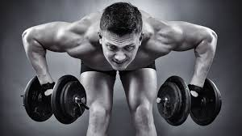

| HORA | TOMA | ALIMENTOS | CANTIDAD |
|---|---|---|---|
| 6:30 | pre-desayuno | batido | 30g |
| 7:00 | Desayuno | Avena leche huevos jugo naranja |
1.5*kg 300ml 3 250ml |
| 9:30 | Almuerzo | Arroz-pasta Pechuga de pollo nueces |
1.2*kg 200g 50gr |
| 12:00 | pre-entreno | platano Creatina+BCAAs |
1 |
| 14:30 | post-entreno | Arroz balnco Batido whey Protein |
1g*kg 40gr |
| 15:00 | Comida | Arroz-pasta suplementos omega 3-6-9 |
1.2*kg 1 Capsula |
| 20:00 | Cena | Verduras o ensalada suplementos omega 3-6-9 |
grande 1 Capsula |
La alimentacion es esencial y cubre el 80% del resultado de tu crecimiento corporal
pero, tener un buen entrenamiento y bien ejecutado, te permitever resultados con mas calidad
A continuacion te mostrare una rutina efectiva:
| Entrenamiento con Pesas. | Ejercicios cortos e intensos. | Concentrarse en grupos musculares grandes. | Hacer cardio maximo 20 minutos. |  |
| Puede perder peso facilmente y marcarse con mayor | Es mas dificil ganar masa muscular. |
DESVENTAJAS. |